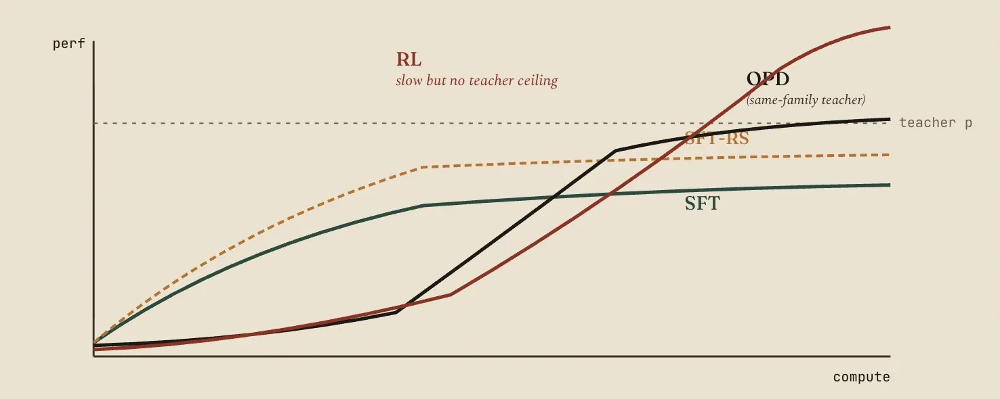
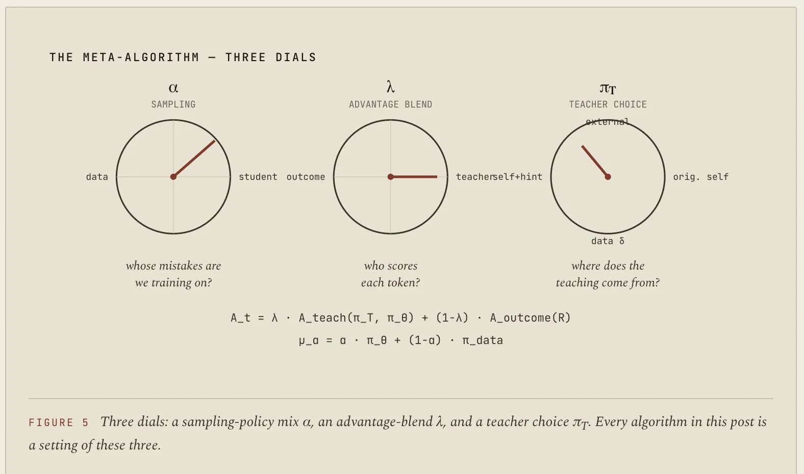
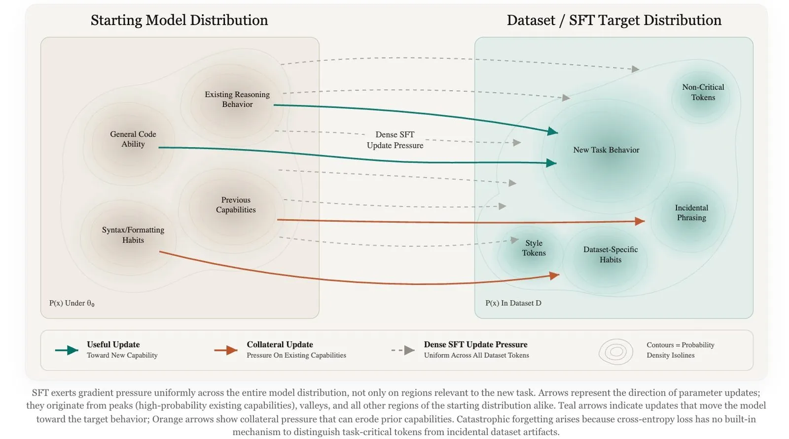
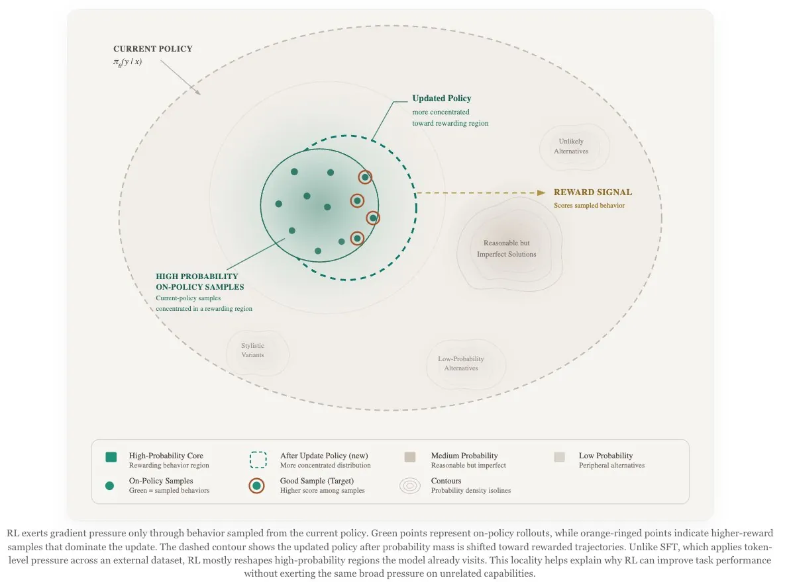
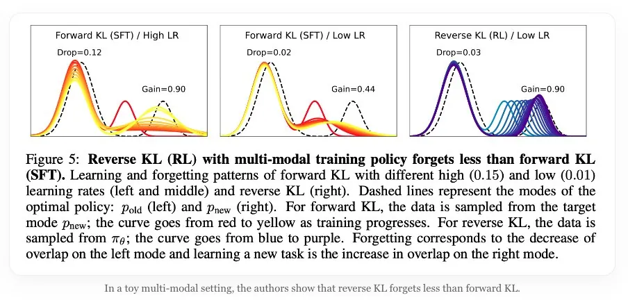
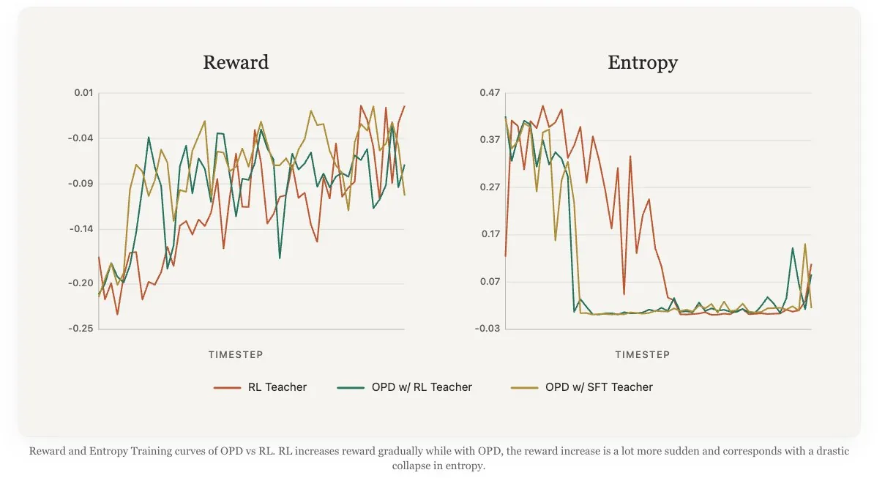
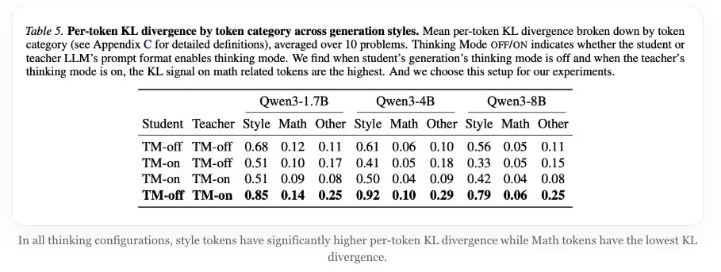
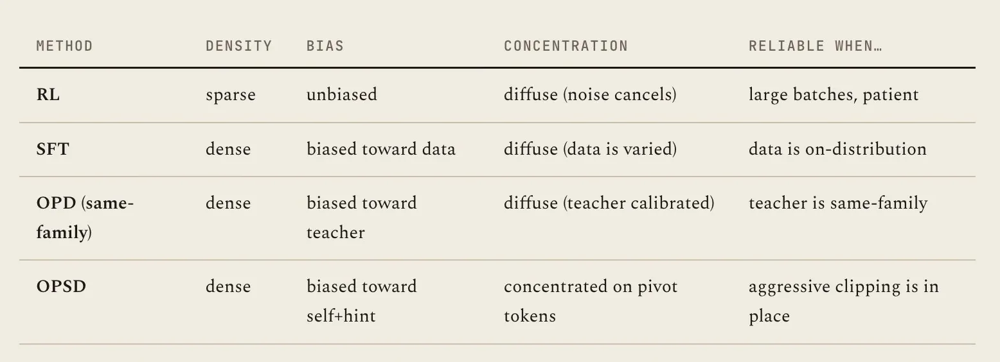
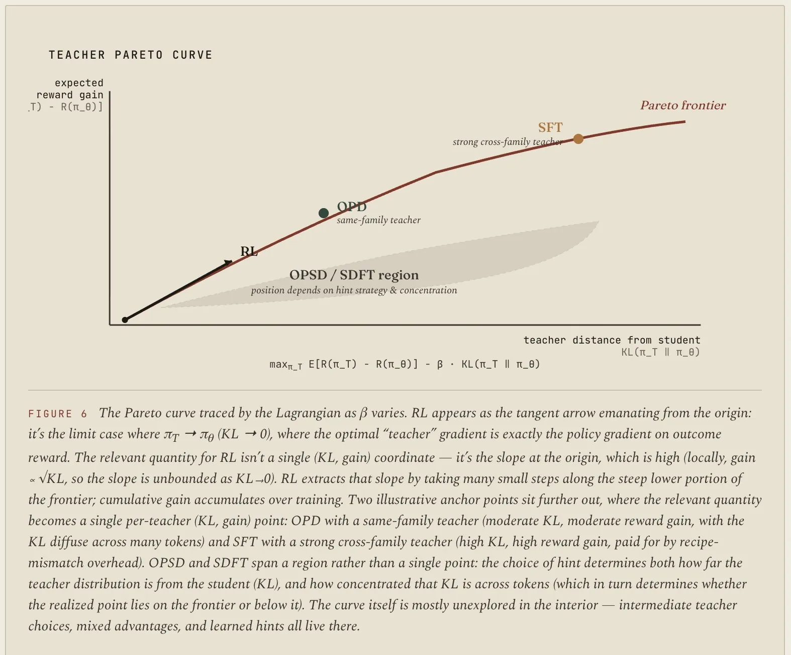

Search this artifact: SFT, RL, OPD, KL, teacher ceiling
SFT, RL, and On-Policy Distillation
A single interactive explainer for the Will Brown and nrehiew_ X articles, grounded in the wiki pages
On SFT RL and On-Policy Distillation and
SFT, RL, and On-Policy Distillation Visual Notes.
[[On SFT RL and On-Policy Distillation]][[SFT, RL, and On-Policy Distillation Visual Notes]][[On-Policy Distillation]][[Distillation Regimes Compared]]
Overview
The two articles make the same core move from different angles: "SFT vs. RL" is too coarse.
The better question is where the training signal comes from, whether the samples are from the
student's current policy, how dense the credit signal is, and how much the method is capped by
a teacher.
Key insight:
In the wiki synthesis, SFT is cheap and dense but fixed to a dataset or teacher-completion
distribution; RL is on-policy and can compound but uses sparse and expensive reward signal;
OPD samples from the student and asks a same-family teacher to score those sampled tokens.
wiki/On SFT RL and On-Policy Distillation.md - gradient taxonomy
RL is sparse but relatively unbiased; SFT is dense, biased, and diffuse; OPD is dense and biased
but relatively diffuse under same-family calibration; OPSD is dense, biased, and concentrated.

From [[On SFT RL and On-Policy Distillation]]: SFT gives early gains, RL compounds later, and
same-family OPD occupies a fast middle regime with a teacher ceiling.
Big Picture
Use the three cards as a mental map. The important axis is not just "uses a teacher" or "uses a
reward"; it is the interaction among sampling distribution, supervision density, and ceiling.
SFT / Completion Distillation
Train on fixed demonstrations or teacher-written completions. The signal is dense next-token
supervision, but the data distribution does not automatically improve as the student changes.
[[Distillation Regimes Compared]]
Reinforcement Learning
Sample current-policy behavior and optimize outcome reward, verifier scores, or preference
signals. The signal is on-policy and can compound, but token-level credit is sparse and noisy.
[[On SFT RL and On-Policy Distillation]]
On-Policy Distillation
Sample student rollouts, then have a teacher score the sampled tokens. OPD keeps on-policy
state coverage while replacing sparse reward with dense teacher-derived guidance.
[[On-Policy Distillation]]
Mental model:
SFT studies a saved answer key. RL practices on its current mistakes and waits for a grader.
OPD practices on its current mistakes while a closely related teacher comments on each move.
SamplingSFT: fixed data. RL and OPD: student rollouts.
SignalSFT and OPD: dense. RL: sparse outcome reward.
CeilingOPD is teacher-bounded unless combined with rewards.
Teacher MatchOPD needs same-family probabilities to be meaningful.
OPD Flow
The OPD loop in the wiki is policy-gradient-like: the student samples a response, a teacher scores
the exact sampled tokens, and the update increases tokens the teacher prefers while decreasing tokens
the teacher disfavors. It does not require a full-vocabulary KL at every step.
A typical OPD update has three pieces: sample current student responses, score the sampled tokens
under a teacher, and optimize toward tokens the teacher prefers.

From [[On SFT RL and On-Policy Distillation]]: the shared meta-algorithm has dials for whose
mistakes are trained on, who scores each token, and where the teacher policy comes from.
Tradeoffs
Click a regime to focus the comparison. The panels are sourced from the wiki's synthesis of the two
articles and the linked OPD concept page.
SFT: dense, cheap, but fixed-distribution
The nrehiew_ visual notes describe SFT as broad dataset-matching pressure. The Will Brown page
adds the compounding limitation: rejection sampling can raise the curve, but it does not change
the fact that the sampling distribution is pinned to the data used to produce candidates.
RL: sparse, compounding, verifier-bounded
RL samples from the current student policy, so later training can build on earlier improvements.
Its cost is sparse, noisy credit assignment, but its ceiling can be set by a verifier or reward
signal rather than by a teacher's policy.
OPD: dense on-policy teacher guidance
OPD is the middle regime: it keeps the student's current state distribution while replacing sparse
reward with dense same-family teacher scoring. The teacher-family constraint is central because
the teacher must assign meaningful probabilities to student-sampled tokens.
OPSD: self plus privileged context
On-policy self-distillation solves tokenizer and recipe mismatch by making the teacher a privileged
version of the student. The Will Brown page flags a new risk: privileged hints can create dense,
biased, concentrated gradients on rare pivot tokens.
Regime
Sampling distribution
Credit signal
Main limit
SFT
Fixed dataset or teacher completions
Dense next-token loss
No automatic compounding after the corpus is generated
RL
Current student policy
Sparse outcome reward or verifier signal
High variance and expensive rollout/reward loop
OPD
Current student policy
Dense teacher-derived token advantage
Teacher-bounded and sensitive to teacher-family match
OPSD
Current student policy with self-teacher
Dense privileged-context signal
Concentrated gradients and KL pressure on pivot tokens
Figure Lab
Filter the verified figures by the part of the story they explain. These images are referenced
directly from wiki/assets/ and were checked against their wiki captions before use.

[[SFT, RL, and On-Policy Distillation Visual Notes]]: SFT pressure can include task behavior,
style tokens, and dataset artifacts.

[[SFT, RL, and On-Policy Distillation Visual Notes]]: RL updates through sampled current-policy
behavior, which explains its compounding property.

[[SFT, RL, and On-Policy Distillation Visual Notes]]: the toy example frames reverse-KL-style
updates as preserving an old mode better than forward-KL SFT.

[[SFT, RL, and On-Policy Distillation Visual Notes]]: OPD reward can rise sharply while entropy
collapses, making KL control part of the method.

[[SFT, RL, and On-Policy Distillation Visual Notes]]: style tokens can carry the highest
per-token KL signal, so dense distillation is not automatically capability-focused.

[[On SFT RL and On-Policy Distillation]]: the gradient taxonomy separates density, bias,
concentration, and when each method is reliable.

[[On SFT RL and On-Policy Distillation]]: the open teacher-selection question is a KL-budgeted
reward-improvement problem.
Pitfalls And Limits
Teacher ceiling
The OPD concept page says OPD can efficiently transfer what a teacher knows, but by itself it has
no independent verifier that says a student token is better than the teacher's preference.
Same-family constraint
The wiki repeatedly treats same-family teacher choice as central for OPD because token-level
probabilities need a shared tokenizer, vocabulary, chat template, and post-training recipe.
Dense signal is still biased
The nrehiew_ visual notes warn that token-level KL can concentrate on style or thinking-mode
tokens. The Will Brown page makes the parallel warning for OPSD: privileged context can over-focus
gradients on rare pivot tokens.
Boundary:
The local wiki notes say the nrehiew_ page is grounded in saved figures plus a local reconstruction,
not a clean verbatim text archive. The artifact therefore treats the page as visual evidence and uses
the wiki synthesis rather than unsupported details from outside the wiki.
Check Yourself
These quick checks are local to the page and cite the wiki page behind the answer.
Question 1
Why is OPD described as a middle ground between SFT and RL?
It uses a fixed teacher-completion corpus but with a higher learning rate.
It samples student rollouts like RL, then applies dense teacher scoring like distillation.
It removes the teacher ceiling by relying only on verifier rewards.
Correct: [[On-Policy Distillation]] defines OPD as student-rollout sampling plus dense teacher
token guidance.
Question 2
What is the main reason same-family teachers matter more for OPD than for completion-SFT?
OPD interprets teacher probabilities on the exact student-sampled tokens.
Completion-SFT cannot use text from a different model family.
Same-family teachers always remove the need for KL control.
Correct: [[On-Policy Distillation]] says tokenizer, vocabulary, chat-template, and recipe match
make token-level credit meaningful.
Sources And Gaps
[[On SFT RL and On-Policy Distillation]]
Provides the phase diagram, gradient taxonomy, OPD/OPSD distinctions, same-family teacher argument,
and optimal-teacher framing.
[[SFT, RL, and On-Policy Distillation Visual Notes]]
Provides policy-space visuals for SFT, RL, OPD/MOPD, reverse KL, entropy collapse, and token-category
KL concentration.
[[On-Policy Distillation]]
Provides the OPD definition, objective shape, same-family teacher rationale, comparison to nearby
regimes, and failure modes.
[[Distillation Regimes Compared]]
Provides the overloaded-distillation framing: classical representation KD, completion-distillation
via SFT, and on-policy distillation.
Gaps surfaced
The wiki notes two limitations: the nrehiew_ article page is based on saved figures plus local
reconstruction rather than a verbatim static article body, and the underlying primary sources for
some MOPD, thinking-mode KL, and minimal-editing results are not yet separately linked as ingested
wiki pages.